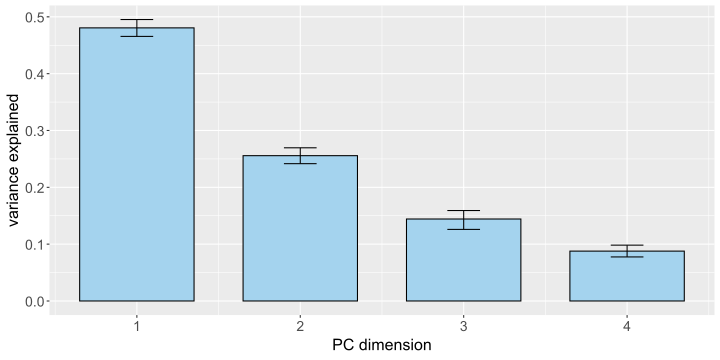

Principal Component Analysis
jueves, 28 de noviembre de 2024
Experimentación
Estandarización de variables

flowchart LR A(Estandarizar\n las variables) --> B(El PCA tiene como objetivo explicar las variaciones de las variables,\n por lo que es esencial que ciertas variables no contribuyan excesivamente\n a esa variación por razones ajenas a la pregunta de investigación.) B --> C[En situaciones donde hay variables en diferentes\n escalas, es preferible centrar los datos en la media y dividir\n sobre la desviación estándar.] B --> D[Si los datos son de escala positiva y se transforman logarítmicamente,\n esto ya es una forma de estandarización de las variables para tener\n escalas aditivas comparables que reflejen las diferencias multiplicativas en las variables.]
Descomposición en valores propios (EVD)

calcula valores propios, denotados habitualmente por \(\lambda_1,\lambda_2,\cdots\) valores positivos en orden descendente, así como vectores propios correspondientes a cada valor propio, denotados por \(v_1,v_2,\cdots\)
Descomposición en valores singulares (SVD)

Da como resultado un conjunto de valores singulares positivos y dos conjuntos de vectores, los vectores singulares izquierdo y derecho, para las filas y columnas respectivamente. Los valores singulares son proporcionales a las raíces cuadradas de los valores propios de la matriz de covarianza y los vectores singulares izquierdo y derecho conducen a la visualización conjunta de casos y variables en forma de un diagrama de dispersión bidimensional.

Reproducibilidad y depósito de datos

Algoritmo de imputación de datos mediante SVD
Ejemplo de simulación: Se simula el \(10\%\) de datos faltantes en la matriz de datos completa del World Happiness Report la cuál tiene \(149 \times 5 = 745\) entradas.
#####################
prop <- 0.1
nrep <- 100
#####################
df <- HAPPY
info <- df[,c(1:2)] %>%
rename(country = 1, region = 2)
df <- df[,c(8:12)] %>%
rename(social = 1, life = 2, choice = 3, generosity = 4, corruption = 5) %>%
mutate(life = as.numeric(gsub(",","",life)))
n <- nrow(df) * ncol(df)
rss <- function(X, A){
sum((X - A)^2, na.rm = TRUE)
}
mPCA <- function(X, rank, maxit = 100, thresh = 1e-5){
A <- outer(rep(1, nrow(X)), colMeans(X, na.rm = T))
score0 <- rss(X, A)
delta <- Inf
it <- 0
while(it < maxit & delta > thresh){
#impute
Xtilde <- X
Xtilde[is.na(X)] <- A[is.na(X)]
#center
m <- colMeans(Xtilde)
Xtilde <- scale(Xtilde, center = m, scale = F)
#lrma
SVD <- svd(Xtilde)
A <- SVD$u[, 1:rank, drop = F] %*% diag(SVD$d[1:rank], rank, rank) %*% t(SVD$v[, 1:rank, drop = F])
#unscale
A <- scale(A, center = -m, scale = F)
#loss
score <- rss(X, A)
delta <- abs((score - score0)/score0)
#cat("iter", it , "rss", score, "delta", delta, "\n")
score0 <- score
it <- it + 1
}
return(score)
}
mPCAnull <- function(X){
A <- outer(rep(1, nrow(X)), colMeans(X, na.rm = T))
score0 <- rss(X, A)
return(score0)
}
result <- c()
for(rep in 1:nrep){
missing <- sample(1:n, n*prop)
df_upd <- as.matrix(df)
df_upd[missing] <- NA
s <- apply(df_upd, 2, sd, na.rm = T)
df_upd <- scale(df_upd, scale = s, center = F)
score0 <- mPCAnull(df_upd)
result <- rbind(result, data.frame(rss = score0, r2 = 0, rank = 0, rep = rep))
for(rank in 1:4){
score <- mPCA(df_upd, rank)
result <- rbind(result, data.frame(rss = score, r2 = 1 - score/score0, rank = rank, rep = rep))
}
}
resultsum <- result %>% group_by(rep) %>%
mutate(vardiff = r2 - lag(r2)) %>%
filter(rank > 0) %>%
group_by(rank) %>%
summarise(mean = mean(vardiff), upper = quantile(vardiff, 0.975), lower = quantile(vardiff, 0.025))
ggplot(resultsum, aes(x = rank, y = mean)) +
geom_bar(stat="identity", fill = "lightskyblue2", color = "black",
position=position_dodge(), width = 0.7) +
geom_errorbar(aes(ymin = upper, ymax= lower), width=.2,
position=position_dodge(.9)) +
ylab("variance explained")+
xlab("PC dimension")+
theme_classic() |> theme(
axis.text.x = element_text(size = 14), # Increase x-axis tick labels
axis.text.y = element_text(size = 14), # Increase y-axis tick labels
axis.title.x = element_text(size = 16), # Increase x-axis title
axis.title.y = element_text(size = 16) # Increase y-axis title
)

Netflix competition
\(480189 \hspace{0.1cm} \textrm{usuarios} \times 17770 \hspace{0.1cm}\textrm{películas}\). En promedio, cada usuario calificó alrededor de 200 películas, por lo que se observó apenas el \(1\%\) de la matriz.
\[M \approx CG^T\] \[\widehat{M} = CG^T\] \[\widehat{m}_{ij} = \sum_{k=1}^r c_{ik}g_{jk}\] \[\textrm{RSS} = \sum(m_{ij} - \widehat{m}_{ij})^2\] Esta imputación masiva sería inviable mediante el anterior algoritmo. Se requiere una versión mejorada con estrategias adicionales. Hay dos algoritmos: SoftImpute y HardImpute.